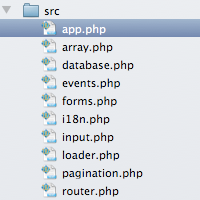

Особенности
-

Простой документированный код
Каждая функция в mini_framework документирована.
Также весь код сам по себе прост.
Если интересно как работает одна функция,
Вам не составит труда разобратся в том как она работает.
-

Легкий и модульный
mini_framework весит всего ~35 КБ и состоит из 14 файлов.
Если эти файлы упаковать в zip архив, размер архива будет ~15 КБ.
Это только если использовать все компоненты, а ведь можно их
использовать по одиночке,
Вам не обязательно тянуть за собой все фреймворк.
-
Вау как быстро!
Из-за того что mini_framework написан с использованием
процедурного/функционального подхода, ваше приложение
будет работать быстрее чем на ООП фреймворках.
В любом случае, надо выбирать то что нравится или подходит.
Простой документированный код
Каждая функция в mini_framework документирована. Также весь код сам по себе прост. Если интересно как работает одна функция, Вам не составит труда разобратся в том как она работает.
Легкий и модульный
mini_framework весит всего ~35 КБ и состоит из 14 файлов. Если эти файлы упаковать в zip архив, размер архива будет ~15 КБ.
Это только если использовать все компоненты, а ведь можно их использовать по одиночке, Вам не обязательно тянуть за собой все фреймворк.
Вау как быстро!
Из-за того что mini_framework написан с использованием процедурного/функционального подхода, ваше приложение будет работать быстрее чем на ООП фреймворках.
В любом случае, надо выбирать то что нравится или подходит.